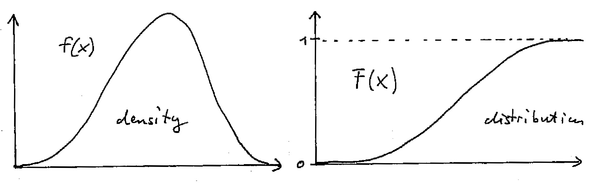

2 Probability
2.1 Random variables
A random variable describes a random experiment. The set of all possible outcomes is the sample space or state space of the random variable and is denoted by \(\Omega = \{\omega_1, \omega_2, \ldots\}\). The outcomes \(\omega_i\) are the elementary events. The sample space \(\Omega\) can be finite or infinite. Depending on type of outcomes the random variable is discrete or continuous.
An event \(A \subseteq \Omega\) is a subset of \(\Omega\) and thus itself a set composed of elementary events: \(A = \{a_1, a_2, \ldots\}\). This includes as special cases the full set \(A = \Omega\), the empty set \(A = \emptyset\), and the elementary events \(A=\omega_i\). The complementary event \(A^C\) is the complement of the set \(A\) in the set \(\Omega\) so that \(A^C = \Omega \setminus A = \{\omega_i \in \Omega: \omega_i \notin A\}\).
The probability of an event \(A\) is denoted by \(\text{Pr}(A)\). Essentially, to obtain this probability we need to count the elementary elements corresponding to \(A\). To do this we assume as axioms of probability that
- \(\text{Pr}(A) \geq 0\), probabilities are positive,
- \(\text{Pr}(\Omega) = 1\), the certain event has probability 1, and
- \(\text{Pr}(A) = \sum_{a_i \in A} \text{Pr}(a_i)\), the probability of an event equals the sum of its constituting elementary events \(a_i\). This sum is taken over a finite or countable infinite number of elements.
This implies
- \(\text{Pr}(A) \leq 1\), i.e. probabilities all lie in the interval \([0,1]\)
- \(\text{Pr}(A^C) = 1 - \text{Pr}(A)\), and
- \(\text{Pr}(\emptyset) = 0\)
Assume now that we have two events \(A\) and \(B\). The probability of the event “\(A\) and \(B\)” is then given by the probability of the set intersection \(\text{Pr}(A \cap B)\). Likewise the probability of the event “\(A\) or \(B\)” is given by the probability of the set union \(\text{Pr}(A \cup B)\).
From the above it is clear that the definition and theory of probability is closely linked to set theory, and in particular to measure theory. Indeed, viewing probability as a special type of measure allows for an elegant treatment of both discrete and continuous random variables.
2.2 Probability mass and density function
To describe a random variable \(x\) with state space \(\Omega\) we need a way to effectively store the probabilities of the corresponding elementary outcomes \(x \in \Omega\).
For simplicity of notation we use the same symbol to denote the random variable and its elementary outcomes. 1 This convention greatly facilitates working with random vectors and matrices and follows, e.g., the classic multivariate statistics textbook by Mardia et al. (1979) 2. If a quantity is random we will always specify this explicitly in the context.
For a discrete random variable we define the event \(A = \{x: x=a\} = \{a\}\) and get the probability \[ \text{Pr}(A) = \text{Pr}(x=a) = f(a) \] directly from the probability mass function (PMF), here denoted by lower case \(f\) (but we frequently also use \(p\) or \(q\)). The PMF has the property that \(\sum_{x \in \Omega} f(x) = 1\) and that \(f(x) \in [0,1]\).
For continuous random variables we need to use a probability density function (PDF) instead. We define the event \(A = \{x: a < x \leq a + da\}\) as an infinitesimal interval and then assign the probability \[ \text{Pr}(A) = \text{Pr}( a < x \leq a + da) = f(a) da \,. \] The PDF has the property that \(\int_{x \in \Omega} f(x) dx = 1\) but in contrast to a PMF the density \(f(x)\geq 0\) may take on values larger than 1.
The set of all \(x\) for which \(f(x)\) is positive is called the support of the PDF/PMF.
2.3 Distribution function and quantile function
As alternative to using PMF/PDFs we may also use a distribution function to describe the random variable. This assumes an ordering exist among the elementary events so that we can define the event \(A = \{x: x \leq a \}\) and compute its probability as \[ F(a) = \text{Pr}(A) = \text{Pr}( x \leq a ) = \begin{cases} \sum_{x \in A} f(x) & \text{discrete case} \\ \int_{x \in A} f(x) dx & \text{continuous case} \\ \end{cases} \] This is also known cumulative distribution function (CDF) and is denoted by upper case \(F\) (or \(P\) and \(Q\)). By construction the distribution function is monotonically non-decreasing and its value ranges from 0 to 1. With its help we can compute the probability of an interval set such as \[ \text{Pr}( a < x \leq b ) = F(b)-F(a) \,. \]
The inverse of the distribution function \(y=F(x)\) is the quantile function \(x=F^{-1}(y)\). The 50% quantile \(F^{-1}\left(\frac{1}{2}\right)\) is called the median.
If the random variable \(x\) has distribution function \(F\) we write \(x \sim F\).
2.4 Families of distributions
A distribution \(F_{\theta}\) with a parameter \(\theta\) constitutes a distribution family collecting all the distributions corresponding to particular instances of the parameter. The parameter \(\theta\) therefore acts as an index of the distributions contained in the family.
The corresponding density (PDF) or probability mass function (PMF) is written either as \(f_{\theta}(x)\), \(f(x; \theta)\) or \(f(x | \theta)\). The latter form is the most general is it suggests that the parameter \(\theta\) may potentially also have its own distribution, with a joint density formed by \(f(x, \theta) = f(x | \theta) f(\theta)\).
Note that any parameterisation is generally not unique, as a one-to-one transformation of \(\theta\) will yield another equivalent index to the same distribution family. Typically, for most commonly used distribution families there are several standard parameterisations. Often we use those parameterisations where the parameters can be interpreted easily (e.g. in terms of moments).
If for any pair of different parameter values \(\theta_1 \neq \theta_2\) we get distinct distributions with \(F_{\theta_1} \neq F_{\theta_2}\) then the distribution family \(F_{\theta}\) is said to be identifiable by the parameter \(\theta\).
2.5 Expectation of a random variable
The expected value \(\text{E}(x)\) of a random variable is defined as the weighted average over all possible outcomes, with the weight given by the PMF / PDF \(f(x)\): \[ \text{E}_{F}(x) = \begin{cases} \sum_{x \in \Omega} x f(x) & \text{discrete case} \\ \int_{x \in \Omega} x f(x) dx & \text{continuous case} \\ \end{cases} \] Note the notation to emphasise that the expectation is taken with regard to the distribution \(F\). The subscript \(F\) is usually left out if there are no ambiguities. Furthermore, because the sum or integral may diverge the expectation is not necessarily always defined (in contrast to quantiles).
The expected value of a function of a random variable \(h(x)\) is obtained similarly: \[ \text{E}_{F}(h(x)) = \begin{cases} \sum_{x \in \Omega} h(x) f(x) & \text{discrete case} \\ \int_{x \in \Omega} h(x) f(x) dx & \text{continuous case} \\ \end{cases} \] This is called the “law of the unconscious statistician”, or short LOTUS. Again, to highlight that the random variable \(x\) has distribution \(F\) we write \(\text{E}_F(h(x))\).
2.6 Jensen’s inequality for the expectation
If \(h(\symbfit x)\) is a convex function then the following inequality holds:
\[ \text{E}(h(\symbfit x)) \geq h(\text{E}(\symbfit x)) \]
Recall: a convex function (such as \(x^2\)) has the shape of a “valley”.
2.7 Probability as expectation
Probability itself can also be understood as an expectation. For an event \(A\) we can define a corresponding indicator function \(1_{ x \in A}\) for an elementary element \(x\) to be part of \(A\). From the above it then follows \[ \text{E}( 1_{x \in A} ) = \text{Pr}(A) \, , \]
Interestingly, one can develop the whole theory of probability from this perspective. 3
2.8 Moments and variance of a random variable
The moments of a random variable are defined as follows:
- Zeroth moment: \(\text{E}(x^0) = 1\) by construction of PDF and PMF,
- First moment: \(\text{E}(x^1) = \text{E}(x) = \mu\) , the mean,
- Second moment: \(\text{E}(x^2)\)
- The variance is the second moment centred about the mean \(\mu\): \[\text{Var}(x) = \text{E}( (x - \mu)^2 ) = \sigma^2\]
- The variance can also be computed by \(\text{Var}(x) = \text{E}(x^2)-\text{E}(x)^2\). This provides an example of Jensen’s inequality, with \(\text{E}(x^2) =\text{E}(x)^2 + \text{Var}(x) \geq \text{E}(x)^2\).
A distribution does not necessarily need to have any finite first or higher moments. An example is the Cauchy distribution that does not have a mean or variance (or any other higher moment).
2.9 Random vectors and their mean and variance
In addition to scalar random variables we often make use of random vectors and also random matrices. 4
For a random vector \(\symbfit x= (x_1, x_2,...,x_d)^T \sim F\) the mean \(\text{E}(\symbfit x) = \symbfit \mu\) is given by the means of its components, i.e. \(\symbfit \mu= (\mu_1, \ldots, \mu_d)^T\) with \(\mu_i = \text{E}(x_i)\). Thus, the mean of a random vector of dimension \(d\) is a vector of the same length.
The variance of a random vector of length \(d\), however, is not a vector but a matrix of size \(d\times d\). This matrix is called the covariance matrix: \[ \begin{split} \text{Var}(\symbfit x) &= \underbrace{\symbfit \Sigma}_{d\times d} = (\sigma_{ij}) = \begin{pmatrix} \sigma_{11} & \dots & \sigma_{1d}\\ \vdots & \ddots & \vdots \\ \sigma_{d1} & \dots & \sigma_{dd} \end{pmatrix} \\ &=\text{E}\left(\underbrace{(\symbfit x-\symbfit \mu)}_{d\times 1} \underbrace{(\symbfit x-\symbfit \mu)^T}_{1\times d}\right) \\ & = \text{E}(\symbfit x\symbfit x^T)-\symbfit \mu\symbfit \mu^T \\ \end{split} \] The entries of the covariance matrix \(\sigma_{ij} =\text{Cov}(x_i, x_j)\) describe the covariance between the random variables \(x_i\) and \(x_j\). The covariance matrix is symmetric, hence \(\sigma_{ij}=\sigma_{ji}\). The diagonal entries \(\sigma_{ii} = \text{Cov}(x_i, x_i) = \text{Var}(x_i) = \sigma_i^2\) correspond to the variances of the components of \(\symbfit x\). The covariance matrix is by construction positive semi-definite, i.e. the eigenvalues of \(\symbfit \Sigma\) are all positive or equal to zero.
However, wherever possible one will aim to use models with non-singular covariance matrices, with all eigenvalues positive, so that the covariance matrix is invertible.
2.10 Correlation matrix
The correlation matrix \(\symbfit P\) (“upper case rho”, not “upper case p”) is the variance standardised version of the covariance matrix \(\symbfit \Sigma\).
Specifically, denote by \(\symbfit V\) the diagonal matrix containing the variances \[ \symbfit V= \begin{pmatrix} \sigma_{11} & \dots & 0\\ \vdots & \ddots & \vdots \\ 0 & \dots & \sigma_{dd} \end{pmatrix} \] then the correlation matrix \(\symbfit P\) is given by \[ \symbfit P= (\rho_{ij}) = \begin{pmatrix} 1 & \dots & \rho_{1d}\\ \vdots & \ddots & \vdots \\ \rho_{d1} & \dots & 1 \end{pmatrix} = \symbfit V^{-\frac{1}{2}} \symbfit \Sigma\symbfit V^{-\frac{1}{2}} \] Like the covariance matrix the correlation matrix is symmetric, and note that the diagonal of \(\symbfit P\) contains only 1s.
Equivalently, in component notation the correlation between \(x_i\) and \(x_j\) is given by \[ \rho_{ij} = \text{Cor}(x_i,x_j) = \frac{\sigma_{ij}}{\sqrt{\sigma_{ii}\sigma_{jj}}} \]
Using the above, a covariance matrix can be factorised into the product of standard deviations \(\symbfit V^{\frac{1}{2}}\) and the correlation matrix as follows: \[ \symbfit \Sigma= \symbfit V^{\frac{1}{2}} \symbfit P\symbfit V^{\frac{1}{2}} \]
For scalar random variables many texts use upper case to designate the random variable and lower case for its realisations. However, this convention quickly breaks down in multivariate statistics when dealing with random vectors and random matrices. Hence, we use upper case primarily to indicate a matrix quantity (in bold type). Upper case (in plain type) may denote sets and some scalar quantities traditionally written in upper case (e.g. \(R^2\), \(K\)).↩︎
Mardia, K. V., J. T. Kent and J. M. Bibby. 1979. Multivariate Analysis. Academic Press.↩︎
Whittle, P. 2000. Probability via Expectation (3rd ed.). Springer. https://doi.org/10.1007/978-1-4612-0509-8↩︎
In our notational conventions, a vector \(\symbfit x\) is written in lower case in bold type, a matrix \(\symbfit M\) in upper case in bold type. Hence random vectors and matrices as well as their realisations are indicated in bold type, with vectors given in lower case and matrices in upper case. Hence, as for scalar variables, upper vs. lower case does not indicate randomness vs. realisation.↩︎